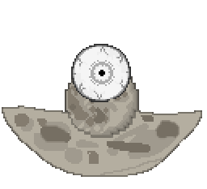

Mara
Home

Summoning
To summon Mara, use a Piece of the Moon
Mara does not spawn naturally.
Mara is a post-moonlord boss.
Stats
Mara's base health is 425 000. It deals 45 base damage and has a defense of 85.
It's large defense stat makes it immune to certain types of attacks.
Drops
Mara always drops: 10 Platinum coins, 5-10 Super potions of both types,
365-999 Zenithite, and the Ancient Ring of Mara. It has a large chance
to drop an Azimuth
Behaviour
Mara has 4 states: movement, star bullet attack, stair rain attack,
and orb attack.